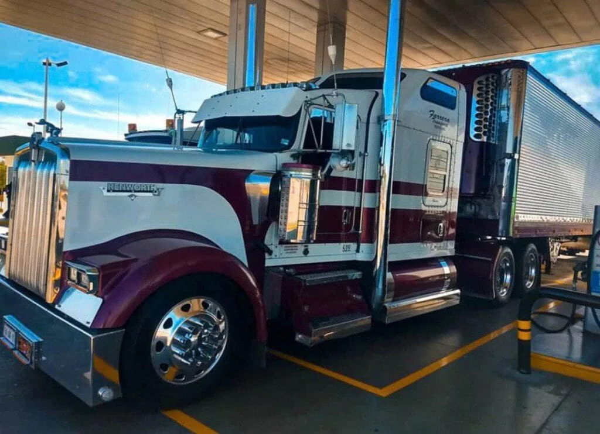

Вопрос №1: Кто может стать американским дальнобойщиком?
Дальнобойщиком в США может стать любой человек, старше 21 года, имеющий легальный статус в Америке и действующие права CDL class A.
Легальный статус подразумевает, что вы имеете Грин карту, рабочую визу или разрешение на работу в стране. Невозможно трудоустроиться трак драйвером в Америке, если вы — нелегал или имеете туристическую визу.
Вопрос №2: Сколько зарабатывает дальнобойщик в США?
Заработок трак драйвера в Америке зависит от нескольких факторов:
- Стаж вождения: новичок получает, в среднем, 50-60 центов за милю. При перевозке опасного груза — 70-80 центов за милю. Деньги водитель трака получает за пройденные мили, поэтому вопрос о почасовой оплате считается в сфере грузоперевозок США, некорректным.
- Критерии дальнобойщика: водитель с собственным транспортом при постоянной занятости может зарабатывать в среднем 180 тысяч долларов в год и больше. Но, помните что, при этом расходы на обслуживание и ремонт трака ему приходится оплачивать самостоятельно. Если трак принадлежит компании или находится в лизинге, то оплата работы дальнобойщика будет меньше.
- Уровень опасности груза: у тех дальнобойщиков, кто перевозит химические, взрывоопасные, негабаритные грузы, оплата будет выше. Как правило, у таких трак драйверов свои маршруты движения и особые указания, так как не везде они могут проехать с опасным или негабаритным грузом. Согласно данным бюро U.S. Bureau of Labor statistics зарплата дальнобойщика за 2020 год, в среднем составила 47 130 долларов.
Вопрос №3: Где самое «рыбное место» для водителя трака в США?
Чикаго считается неофициальной столицей трак драйверов в США. И этому есть несколько причин:
- Через Чикаго проходят крупные транспортные артерии Америки, пересекающие весь континент.
- Больше всего компаний, занимающихся грузоперевозками находятся в Чикаго (не менее 50% от всех компаний США в этой сфере).
- Крупный транспортный узел обеспечивает заказами дальнобойщиков. Но и много локальных перевозок по самому городу.
- Чикаго комфортный город для перемещения на больших траках — широкие улицы и высокие мосты.
Вопрос №4: Какие условия труда для дальнобойщиков в США?
Как и в любой другой сфере деятельности, в работе тракдрайвера в Америке есть свои плюсы и минусы.
К положительным явлениям можно отнести:
- Развитая дорожная инфраструктура для водителей.
- Хорошие дороги, особенно междугородние трассы.
- Качественное техобслуживание машины.
- Высокая зарплата, даже по меркам США.
- Относительная свобода в плане «начальник — подчинённый.»
- Наличие гибкого и большого отпуска у водителей.
- Возможность быстрого карьерного роста.
- Возможность поездить по всей стране.
Рассмотрим отрицательные явления в работе дальнобойщиком в США:
- Сидячая работа, что вызывает проблемы со здоровьем.
- Перманентный стресс во время вождения.
- Отсутствие возможности проводить время с семьёй.
- Возможность опасных ситуаций на дороге.
- Отсутствие режима дня и питания.
- Большая ответственность за груз.
- Отсутствие интеллектуального развития.
Вопрос №5: Какие удобства в американских траках для водителей?
Американские грузовики имеют более габаритную кабину, оснащенную дополнительными сиденьями, просторным спальным местом, а также оборудованы бытовой техникой
Внутри, в кабине, вы сможете передвигаться в полный рост, как в малогабаритной квартирке: две кроватки, столик, чайник, электроплита, холодильник. В больших фурах есть даже туалет и душевая кабина.
Немаловажным преимуществом для дальнобойщика является низкий уровень вибрации водительского места.
Несмотря на все плюсы американского трака, он не всегда соответствует реалиям «наших» (российских, украинских, белорусских) дорог.
«Американец» менее маневренный, высокий и имеет большие, зачастую — непроходимые габариты для наших дорожных развязок и мостов. К тому же, более жёсткая подвеска грузовика не всегда хороша на наших, не очень качественных, дорогах.
Вопрос №6: Как получить работу дальнобойщика в США?
Чтобы стать дальнобойщиком в США, необходимо получить права CDL класса А. Для получения водительских прав данного образца вы должны предпринять следующие шаги:
Шаг 1. Подготовка документов.
- Медицинская комиссия — необходимо предоставить справку (документ) об отсутствии медицинских противопоказаний для работы тракдрайвером.
- SSN (номер социального страхования) — выдают его раз и навсегда, по приезду в США, если вы имеете легальный статус и разрешение на работу в стране.
- Driver license (водительское удостоверение) — необходимо иметь водительские права. Если вы водили машину у себя, на родине, то в США, вы нужно получить водительское удостоверение местного (американского) образца.
- Грин карта или разрешение на работу в США.
С данными документами, вы обращаетесь в DMV (Департамент автотранспортных средств) своего штата, для получения разрешения на обучение и последующую сдачу теории.
Сдача теории может проходить как на русском, так и на английском языках. Практическая часть экзамена сдается только на английском языке.
Шаг 2. Теоретическая часть.
Теория включает в себя прохождение трёх тестов на компьютере в офисе DMV вашего штата (General knowledge, Combination vehicle, Air brake). Теоретическую часть экзамена можно сдавать в разные дни, по отдельности.
Для подготовки к теории можно использовать бесплатные материалы на официальном сайте DMV вашего штата.
При успешной сдаче трёх вышеупомянутых тестов (теории), вы получите CLP (Commercial Learner’s Permit). Это разрешение на вождение грузовика в присутствии водителя (инструктора), имеющего права CDL class A.
Не раньше чем через 14 дней, вы можете назначить дату сдачи практической части экзамена (Road test).
Шаг 3. Практическая часть: самостоятельно или поиск школы.
На данном этапе, у вас есть выбор — сдать практику самостоятельно или найти школу CDL. Обращаю ваше внимание, что в школу трак драйверов США принимают только при наличии у вас CLP (permit).
Практическая часть экзамена состоит из трёх частей:
- Pre-trip inspection — проверка машины перед рейсом.
- Basic control skills test — база по управлению транспортом.
- On road driving test — вождение непосредственно на дороге.
Каждую часть вы сдаете строго последовательно. Материалы для подготовки к сдаче первой части практики, вы можете брать у DMV (самостоятельно), либо — преподаватель школы предоставит вам специальный материал.
После успешного прохождения практической части экзамена, вам необходимо будет посетить офис DMV для получения коммерческих прав.
Совет: как бесплатно получить CDL в США
Со всеми документами, вам необходимо обратиться в школу CDL, работающей с компаниями и правительством страны.
Таким школам, государство выделяет Грант на обучение. Ваша учеба будет длиться приблизительно 4 месяца, курс обучения — 180 часов. Желательно ходить на курс обучения как на работу, без пропусков, ежедневно по 8 часов.
Расклад такой: часть от стоимости вашего обучения оплатит государство, в размере 2 тысяч долларов, а остальную часть суммы — компания, на которую в будущем, вы будете работать как дальнобойщик, после получения вами CDL. Компания-работодатель удерживает сумму, потраченную на обучение, с вашей зарплаты в течении первых нескольких месяцев.
Вопрос №7: Какие русские школы CDL в США выбрать?
- Филадельфия — Start CDL Training./li>
Профессиональные курсы Start CDL training проводит обучение поэтапно. Учиться можно на механической или автоматической коробке передач. Школа работает с 2014 года.

Фото из архива школы Start CDL training
В некоторых городах Америки существуют русские трак школы CDL драйверов:
- Майами — CDL Miami.
Русская школа CDL обучает на права любой категории. Помощь в изучении теории и сдачи экзамена на permit. Стоимость обучения 2000 долларов.
- Сан — Диего — Leonardo CDL Club.
- Дальность вашего места проживания.
- Стоимость проживания в период обучения.
- Отсутствие предоплаты до начала обучения.
- Условия и продолжительность обучения в школе.
- Наличие хорошей репутации и отзывов о школе.
Центр подготовки тракдрайверов Leonardo CDL Club предоставляет финансирование обучения — down payment от 1000 долларов. Встреча и размещение учеников.
При выборе русской школы CDL в США обратите внимание на следующие факторы:
Вопрос №8: Как найти работу в США CDL, если ты новичок?
На самом деле трудоустройство новичка CDL в Америке процесс не сложный.
В интернете есть много объявлений “Требуются водители c CDL Class А”от логистических компаний, нуждающихся в дальнобойщиках. Если вы проходили обучение в школе трак драйверов, то есть возможность получить работу через неё, т.к. у некоторых школ CDL есть договоренность с компаниями о дальнейшем трудоустройстве выпускников.
Как правило, сразу после устройства на работу, новичку дают две недели на стажировку. Она необходима, чтобы вы привыкли к порядкам, существующим внутри компании
В период стажировки новичок будет ездить вместе с опытным водителем и получать около 500 долларов в неделю.
Вопрос №9: Сколько часов может ехать дальнобойщик в США?
Согласно трудовому законодательству Америки, дальнобойщику разрешено находится за рулём (на работе) не более 11 часов, после чего водитель обязан остановиться на отдых. Через 10 часов возобновить движение.
Важно! Вы не можете проехать 5 часов и затем встать на отдых на 2 часа, по своему усмотрению. Такое деление времени запрещено.
В зависимости от маршрута, водители трака в США могут перемещаться внутри границ одного штата или пересекать несколько штатов, соответственно у них будут нюансы, касаемо рабочего времени и отдыха.